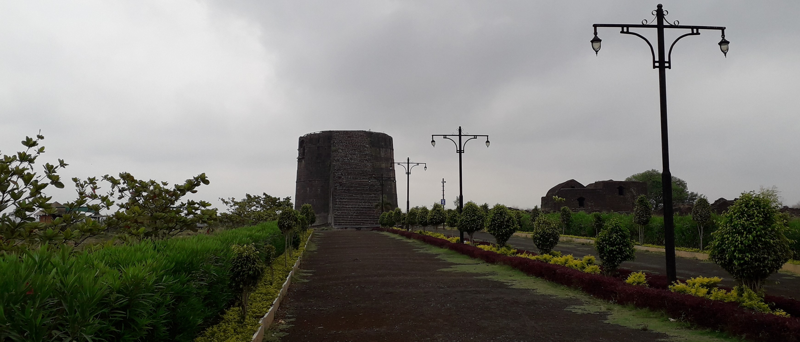

Nalurg fort is one of the important ground fort in the marathwada region. It represents a fine example of medieval architectural style. The local tradition believes that the fort was built by nalarajaand therefore the fort and the city is named after him. The fort is said to have been built originally in in the period of the chalukyan king of the kalyanii dynasty. The massive fortification wall of the fort was constructed later from A.D.1315 to A.D. 1480 in the peroid of bahamani kings and in 1558 A.D. by Adilshahi rulers.

Fortification of the naldurg fort
In A.D. 1613 ibrahim adilshahii bulir the weir on the river bori and constructed The Pani mahal. The pane mahal id an excellent example of architecture styles and engineering techniques of that era.

PaniMAHAL in weir on the bori river of the naldurg fort
The main entrance gate of the fort is known as "HULMUKH DARWAZA". The fort is protected by massive PARANDE,UPLI,SANGRAM and NAV BURUJ etc. Upli buruj is the highest point in the fort.Cannons are placed on some of these bastions till today.
Upli burj at center of the fort to keep watch
Among these Cannon's "the hathi of" and "magar tof"are of prime importance. Inside the fort there are remains of the old building known as ambarkhana, munsif court,masjid,baradari,ranimahal rangmahal,hathi kund and machli tat. These are the architecture memories of the that period.Naldurg fort is a state protected donument of the department of archeology and musems,maharashtra state.